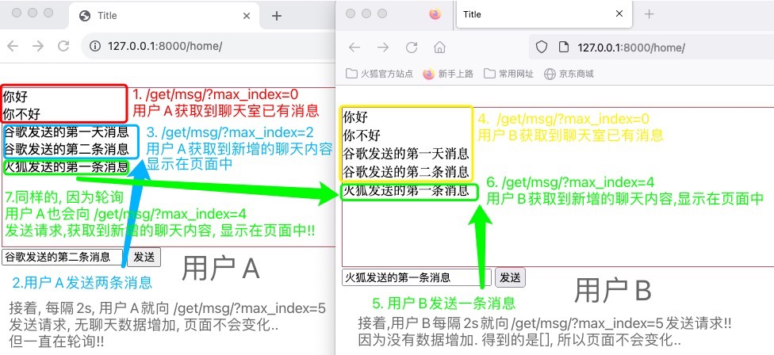
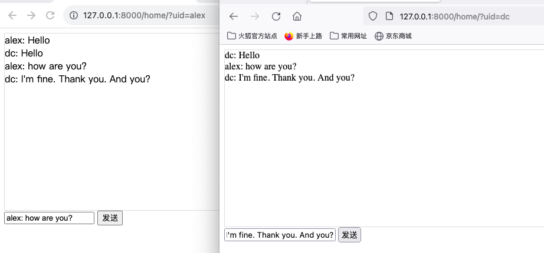

轮询长轮询
聊天室¶
就像是b站直播时, 多人在一个框里发表评论/群聊, 在不刷新页面的情况下, 会自动不断的更新.
聊天室实现思路/原理!
写网站默认使用的http协议,http请求是无法实现群聊功能的.
http协议 >> 无状态、短链接. 一次请求一次响应,断开链接/C端和S端就断开了链接. 想要实时的获取数据是不可能的!
解决方案:
1> 轮询
<“在代码级别,用setInterval加上ajax就可以基本实现.”>
让浏览器每隔1、2s就向后台发送一次请求拿数据. -- 有延迟的
每个浏览器都这么操作. -- 后台请求太多,压力很大
2> 长轮询
<“在代码级别,用队列可以基本实现.”>
客户端向服务端发送请求
- 若无新数据,服务端会捏着客户端的连接,最多夯住20s,20s都没新数据,服务端会告诉客户端无新数据
- 在这20s内一旦有新数据就立即返回.
一次请求一次响应,连接断开.紧接着,客户端再次向服务端发送请求,重复这一过程.
长轮询的特点:
与轮询相比,单位时间内的请求个数会减少,数据的响应无延迟(网络的延迟忽略不计).
对于服务端而言,它得夯住客户端发来的连接,也就是说服务端得支持多个客户端同时发来请求,并且保持连接不断开.
(像webQQ、web微信都使用的长轮询,因为这种模式的兼容性比较好,即使是版本很老的浏览器都支持这种长轮询的机制.)
3> websocket
客户端和服务端创建连接不断开,那么就可以实现双向通信.
比如:浏览器A、B、C都向服务端发送了一个请求,各自创建了一个websocket连接.且不会断开.
可以认为在服务端里维护了一个[连接1,连接2,连接3],
当C向群里发送一个消息“Hello”,服务端就可以通过连接1、连接2主动的将“Hello”这条消息推送给浏览器A、B
借此,实现了双向通信,客户端可以主动向服务端发送请求,服务端也可以主动给客户端发送请求.
这种可以来回收发消息的机制也称作双工通道!
websocket的特点: 服务端向客户端主动推送消息.
下面会基于轮询、长轮询、websocket实现聊天室的功能!!
轮询¶
让浏览器每隔2s就向后台发送一次请求. 缺点: 延迟、请求太多,网站压力大.
大致思路¶
前端用setInterval+ajax就实现了轮询
1.访问/home/,显示聊天室界面.
2.在聊天室界面,输入聊天内容,点击发送按钮.数据后端能接受到. 后端存储聊天内容.
(具体来说,通过ajax请求以GET请求的方式将聊天内容发送到后端 eg: /send/msg/?text=hello “text的值会变”)
3.后台能接受到聊天内容.如何实现轮询?
全端 定时/每隔2s 获取消息,将后端返回的聊天数据,展示在页面上!
eg: http://127.0.0.1:8000/get/msg/?max_index=3 “max_index的值会变”
○ home页面里用setInterval+ajax就实现了轮询, 每隔2s就会向 /get/msg/?max_index=.. 发送请求!! 用于请求聊天数据.
So, 首次访问home页面时, 能拿到聊天室已有的聊天信息. 往后的轮询, 有新增数据就会显示在页面中!!
○ home页面的发送按钮, 会向 /send/msg/?text=.. 发送请求!! 用户添加聊天数据.

具体实现¶
路由配置
from django.urls import path
from api import views
urlpatterns = [
path('home/', views.home), # 聊天室界面
path('send/msg/', views.send_msg), # 点击聊天室的发送按钮,会往数据库新增一条数据
path('get/msg/', views.get_msg), # 聊天室里的js代码,通过2s一次的轮询,获取到数据库中新增的数据
]
业务逻辑代码
from django.shortcuts import render, HttpResponse
from django.http import JsonResponse
import json
DB = ["你好", "你不好"] # 一旦有新聊天消息一来,就添加到数据库中.该列表替代了数据库.
def home(request):
return render(request, "home.html")
# - 不同的用户发送的聊天信息,都会添加到数据库中
def send_msg(request):
DB.append(request.GET.get("text"))
return HttpResponse("ok!")
# - 读取数据库中新增的数据,在前端的聊天界面展示内容(这样可以看到自己发的以及别人发的)
def get_msg(request):
# type(request.GET.get('index')) 取到的是字符串类型的数据.
index = int(request.GET.get('max_index'))
"""
错误方案:每次都返回DB列表,因为前端是轮询,所以会不断打印列表内容,会不断重复.
正解:每次轮询只添加DB列表中新增的内容!!下次轮询相对上次轮询,DB没变化就返回空[].
道理是这个道理,但数据一多,不应该每次都比较,而是应该基于id值来实现同样的效果!!
★ 若是mysql数据库,应该获取id大于某个值的那些记录!! <id是从1开始>
这里简单起见,是以列表代替数据库存储数据: <列表读数据是从下标0开始>
举个栗子.
列表 DB = ["你好", "你不好"]
- 前端向后端请求聊天数据,最开始传递的max_index是0
- 返回的DB[index:] 前取后不取 即["你好", "你不好"] 前端会将这数据循环添加div标签在聊天区域
- 返回的len(DB) 前端会赋值2给全局变量max_index,代表下次读取的数据从DB的哪个下标开始.
▲ 不用担心, eg a = [1,2] a[2:]的值是[],不会有数组越界的报错.
- 前端再次向后端请求聊天数据
1.前端用户未发送聊天消息,前端再向后端请求聊天数据,返回的数据是[]; 前端的全局变量max_index不变.
2.在此之前前端用户发送聊天信息"Hello",DB列表里增添一条数据 ["你好", "你不好", "Hello"]
前端再向后端请求聊天数据,此时传递的max_index是2
- 返回的DB[2:] 前取后不取 即["Hello"] 前端会将这数据循环添加div标签在聊天区域
- 返回的len(DB) 前端会赋值3给全局变量max_index,代表下次读取的数据从DB的哪个下标开始.
以此类推.
"""
context = {
"data": DB[index:],
"max_index": len(DB),
}
"""
- 若使用HttpResponse
需将python对象编码成json字符串,然后前端得到该字符串后通过JSON.parse(res)反序列化成js的对象
data_string = json.dumps(context)
return HttpResponse(data_string)
- 若使用JsonResponse
JsonResponse不仅会对数据进行json.dumps序列化,还会加上application/json的响应头
意味着,它告诉前端,我返回给你的是json格式的数据.
前端看到响应头,知道了拿到的是json格式的数据,会自动做序列化!!不用自己再手动转换.
相当于ajax里写了dataType:"JSON".
return JsonResponse(context)
"""
return JsonResponse(context)
前端代码 home.html 前端用setInterval加上ajax就可以基本实现.
<!DOCTYPE html>
<html lang="en">
<head>
<meta charset="UTF-8">
<title>Title</title>
<style>
.message {
height: 200px;
width: 100%;
border: 1px solid indianred;
}
</style>
</head>
<body>
<br>
<div class="message" id="message"></div>
<div>
<input type="text" placeholder="请输入" id="txt">
<input type="button" value="发送" onclick="sendMessage()">
</div>
<script src="https://cdn.bootcdn.net/ajax/libs/jquery/3.6.4/jquery.min.js"></script>
<script>
// - 基于Ajax将用户输入的文本信息发送到后台(页面不刷新,偷偷的发请求)
/* 假设用户输入文本内容"Hello".
此处是get请求.
点击发送按钮后,会向该地址发送请求http://127.0.0.1:8000/send/msg/?text=hello */
function sendMessage() {
var text = $("#txt").val(); // 获取输入框文本
$.ajax({
url: "/send/msg/",
method: "GET",
data: {
text: text,
},
success: function (res) {
console.log("请求发送成功!", res)
}
})
}
max_index = 0;
// - 每隔2s向后端发送请求,获取数据并展示到页面上!
setInterval(function () {
$.ajax({
url: "/get/msg/",
method: "GET",
data: {
max_index: max_index,
},
success: function (res) {
console.log("获取到数据 >>:", res)
max_index = res.max_index // 赋值给全局变量
// 循环dataArray数组,加到id=message的div里!
$.each(res.data, function (index, item) {
console.log(index, item);
// 将内容拼接成div标签,并添加到message区域.
var tag = $("<div>");
tag.text(item);
$("#message").append(tag);
})
}
})
}, 2000)
</script>
</body>
</html>
长轮询¶
客户端向服务端发送请求, 服务端最多夯住20s, 一旦有数据立即返回. 数据响应没有延迟.
大致思路¶
后端使用队列来实现把请求夯住多少秒.
在后端为A、B、C三个人各自维护了一个队列. 队列A 队列B 队列C.
发数据:
当A发了一条消息 “Hello”,三个队列中都会添加“Hello”这条数据, B、C发消息同理.
获取数据:
B想获取到新增的聊天消息,那么B得发送一个新请求(可通过Ajax请求),来自己的队列B中取. 队列B [“Hello”]
拿到了数据“Hello”,就将数据呈现在页面上. (从队列中取走了数据,队列中就没有该数据啦) 队列B []
然后立即再发一个请求,监听自己的队列B中有无数据.
- 若没有数据,就进行阻塞,阻塞30s都没有数据,那么就不再夯住这个请求,返回空
返回空没关系啊,B再发送一个请求,来监听自己的B队列里有无新数据!
- 此时C发了条消息 “SB”, 队列B中有新数据啦, 会取出返回,呈现在B的聊天界面上.
然后立即再发一个请求,监听自己的队列B中有无数据.
周而复始.
具体如何实现呢?大致思路如下:
1. 访问Home页面,展示聊天室页面.为每个用户创建一个队列.
2. 点击发送按钮,聊天内容可以发送到后端,后端将该聊天内容扔到每个人的队列中.
3. 递归获取消息,去自己的队列中取数据,呈现在自己的聊天页面上!
PS:当用户访问该Home页面时,才会为其创建一个队列!所以,会导致后进来的用户不会向上面的轮询案例中,展示已有的聊天记录.
别纠结它,像网页版的web微信实现起来不会那么简单,真实的场景中还有很多细节!该长轮询的示例只是为了让自己感受下核心的原理!!

注: 浏览器开发者模式, 查看网络请求, 若状态是 pending, 则证明请求已经到后端啦, 但后端将该请求夯住啦! 正在处理, 没有返回.
此示例中, 是规定的阻塞时间到啦 或者 阻塞时间之内有数据啦, 才会返回, 状态码由pending变为200!
队列¶
可以阅读 “
https://zhuanlan.zhihu.com/p/37093602” 大致了解下, python中的四种队列!
在实现长轮询的聊天室的示例中, 我们使用的是 queue.Queue ！
import queue
q = queue.Queue() # 创建队列
# 往里面加数据
q.put(123)
q.put("666")
# 从队列中取数据
# 情况1:队列中有数据,可以立即获取到
v1 = q.get()
print(v1, type(v1))
v2 = q.get()
print(v2, type(v2))
# 情况2:队列中没有数据
# 代码q.get()会夯住/阻塞住,直到有人往队列中放数据
# 我们不希望它一直阻塞下去,所以加了参数timeout
# - 10s内队列中有数据会立即获取到
# - 10s内没数据,会抛出queue.Empty的异常
try:
v3 = q.get(timeout=10)
print(v3, type(v3))
except queue.Empty as e:
pass
具体实现¶
路由配置
from django.urls import path
from api import views
urlpatterns = [
path('home/', views.home), # 聊天室界面,为访问该页面的用户创建一个队列
path('send/msg/', views.send_msg), # 点击聊天室的发送按钮,会往每个队列中添加该聊天内容
# 聊天室里的js代码,里面是递归函数,在聊天室页面加载完成时就会执行开始递归.
# 该函数会向该路由发送ajax GET请求,会传递uid参数,便于拿到当前用户队列里的数据.
path('get/msg/', views.get_msg),
]
业务逻辑代码
import queue
from django.shortcuts import render, HttpResponse
from django.http import JsonResponse
USER_QUEUE = {}
def home(request):
# 1.获取url中的"uid",得知是哪位用户进入聊天室
uid = request.GET.get('uid')
print(uid, type(uid))
# 2.为该用户创建一个队列.
# 为了简单起见, 此处使用的是python中的queue.Queue
# 还可以使用 kafka、redis等.
USER_QUEUE[uid] = queue.Queue()
# 这里简单起见,将uid直接传递到了模版层
# 其实通常会添加到cookie中,以token等形式存在.
return render(request, 'home.html', {"uid": uid})
def send_msg(request):
# 1.拿到新增的数据
text = request.GET.get('text')
# 2.往每个队列里都放一份
for uid, q in USER_QUEUE.items():
q.put(text)
return HttpResponse("ok")
def get_msg(request):
# 1. 去自己的队列获取数据, SO,哪个人的队列呢?前端得传递一个uid给我.
uid = request.GET.get('uid')
"""
- 在用户访问home页面时,没有传uid的话,为其创建的是空队列,该队列对应的键值是None None:[]
print(uid, type(uid)) -- None <class 'NoneType'>
- 而此处的uid是ajax GET请求时传递的,其值类型是str.
print(uid, type(uid)) -- None <class 'str'>
So,报错,KeyError: 'None'
"""
# 2. 获取自己的队列
q = USER_QUEUE[uid]
# 3. 从自己的队列中获取数据
result = {'status': True, 'data': None}
try:
data = q.get(timeout=10)
result["data"] = data
except queue.Empty as e:
result['status'] = False
return JsonResponse(result)
前端代码
<!DOCTYPE html>
<html lang="en">
<head>
<meta charset="UTF-8">
<title>Title</title>
<style>
.message {
height: 300px;
border: 1px solid #dddddd;
width: 100%;
}
</style>
</head>
<body>
<div class="message" id="message"></div>
<div>
<input type="text" placeholder="请输入" id="txt">
<input type="button" value="发送" onclick="sendMessage();">
</div>
<script src="https://cdn.bootcdn.net/ajax/libs/jquery/3.6.0/jquery.min.js"></script>
<script>
USER_UID = "{{ uid }}";
// 基于Ajax将用户输入的文本信息发送到后台(偷偷发请求).
function sendMessage() {
var text = $("#txt").val();
$.ajax({
url: '/send/msg/',
type: 'GET',
data: {
text: text
},
success: function (res) {
console.log("请求发送成功", res);
}
})
}
// 递归的去自己的队列中获取消息
function getMessage() {
$.ajax({
url: '/get/msg/',
data: {
uid: USER_UID,
},
type: "GET",
dataType: "JSON",
success: function (res) {
/* 请求成功有两种情况:
1> 超时,没有新数据
2> 新数据,展示新数据 */
// 若有数据,应展示出来.即生成一个标签加进去.
if (res.status) {
var tag = $("<div>");
tag.text(res.data)
$("#message").append(tag);
}
// 无论因为哪种情况使得请求成功,都应该立即再次发送一次请求.
/* 这种写法看起来是递归,但在js内部不会用递归的模式去处理它
所以不用担心递归的调用栈导致内存开销大的问题,这样写仅管放心 */
getMessage();
}
})
}
// 当页面框架完成之后,就执行getMessage方法!! 这是jquery提供的写法.
$(function () {
getMessage();
})
</script>
</body>
</html>
思考¶
Q: 在基于长轮询机制的聊天室示例中,服务端夯住该连接,会不会压力很大?
A: 有压力,按照示例中的代码,每个客户端向服务端发送请求后,服务端都需要有一个线程来接收该请求并处理它.
该线程还有有阻塞的状态,不能干其它事情.极大的浪费资源.
解决方案: IO多路复用 + 异步. (这就得复习下,python的网络并发编程啦,都忘完了 (つД`)ノ)
Q: 示例中为什么要一个用户一个队列,必须这样吗?
A: 不是的!!
我们想实现很多用户往队列里取数据,没数据就夯住,有数据就取.不会因为有用户取了数据,下一个用户取时,该队列就没有数据了.
但Python中没有这样的队列.所以我们就曲线救国,给每个用户都维护了一个队列.
解决方案: redis的发布和订阅功能. 只要订阅该队列,所有订阅者都能从里面拿走一份数据.
Q: 这里可使用UDP吗？
A: no,要知道轮询和长轮询示例中的网站开发都是基于http协议的,http协议的底层是基于TCP协议的!